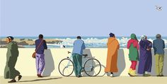

Affordable Art
I'm not an artist, a musician, or an athlete — but I’ve tried all of them. I ride bicycles on long tours, I surf when I can, and I paint because I enjoy the process.
What draws me in most is understanding how things are done. Whether it’s the brushwork in a painting, the rhythm in music, or the balance on a surfboard — I enjoy it more when I understand the craft behind it.
This website is a place to share some of the paintings I’ve made, not as a professional, but as someone genuinely curious. If you're like me — someone who enjoys learning by doing — I hope you find something here that speaks to you.
Thanks for visiting. Feel free to explore, ask questions, or just enjoy the ride.